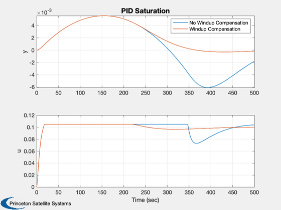

Demonstrates the effect of integrator windup and how to fix it.
Uses PIDMIMO to design the controller and C2DZOH to discretize it. The simulation runs twice, once with windup compensation and once without. y is the measurement and u is the control.
Since version 2. ------------------------------------------------------------------------- See also C2DZOH, PIDMIMO, Windup, Plot2D -------------------------------------------------------------------------
Contents
%-------------------------------------------------------------------------- % Copyright 1995-1996, 2006 Princeton Satellite Systems, Inc. % All rights reserved. %--------------------------------------------------------------------------
Constants
%---------- dT = 1.0; %sampling period
Database
%--------- inr = 10000; %inertia matrix
Design the PID
PIDMIMO produces the controller and C2DZOH discretizes it
%-------------------------------- zeta = 0.7071; %vector of damping ratios omega = 0.04; %vector of undamped natural frequencies tauInt = 50; %vector of integrator time constants omegaR = 1.0; %vector of derivative term roll-off frequencies [aC, bC, cC, dC] = PIDMIMO( inr(1,1), zeta, omega, tauInt, omegaR, dT, 'Delta' ) [aP,bP] = C2DZOH( [0 1;0 0], [0; 1/inr(1,1)], dT ); cP = [1 0]; dP = 0;
aC =
0 0
0 -0.65924
bC =
1
0.65924
cC =
0.29724 -767.6
dC =
792.99
Simulate the loop
%------------------ nSim = 500; %number of simulation time steps uStep = 0.1; %step disturbance input uSat = 0.105; %saturation limit for the actuators uPlot = zeros(2,nSim); yPlot = zeros(2,nSim); for j = 1:2 x = zeros(2,1); y = 0; xPID = [0;0]; if( j == 2 ) % Adjust the compensator for windup %---------------------------------- [aC,bC,lC] = Windup( aC, bC, cC, dC, [], 'delta' ); else lC = [0;0]; end for k = 1:nSim % Controller %----------- u = cC*xPID + dC*y; if( abs(u) > uSat ) u = sign(u)*uSat; end xPID = xPID + aC*xPID + bC*y + lC*u; yPlot(j,k) = y; uPlot(j,k) = u; % The plant %---------- x = aP*x + bP*(uStep-u); y = x(1); end end Plot2D((0:(nSim-1))*dT,[yPlot;uPlot],'Time (sec)',['y';'u'],'PID Saturation','lin',['1:2';'3:4']); legend('No Windup Compensation','Windup Compensation') %-------------------------------------- % PSS internal file version information %-------------------------------------- % $Date$ % $Id: e7f1950fb60322968d7fd48c57262012fae6e756 $